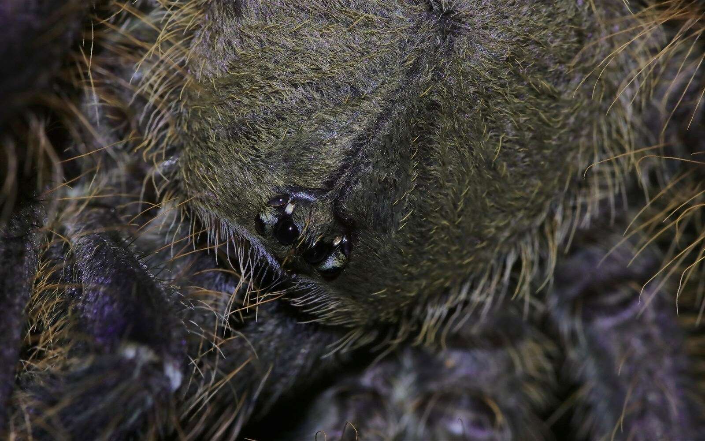
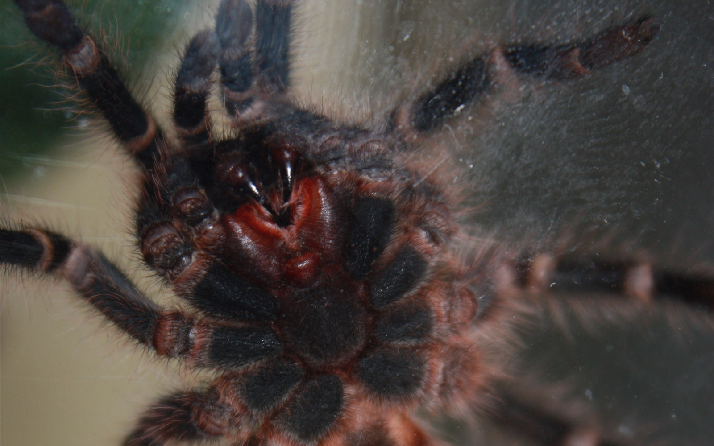
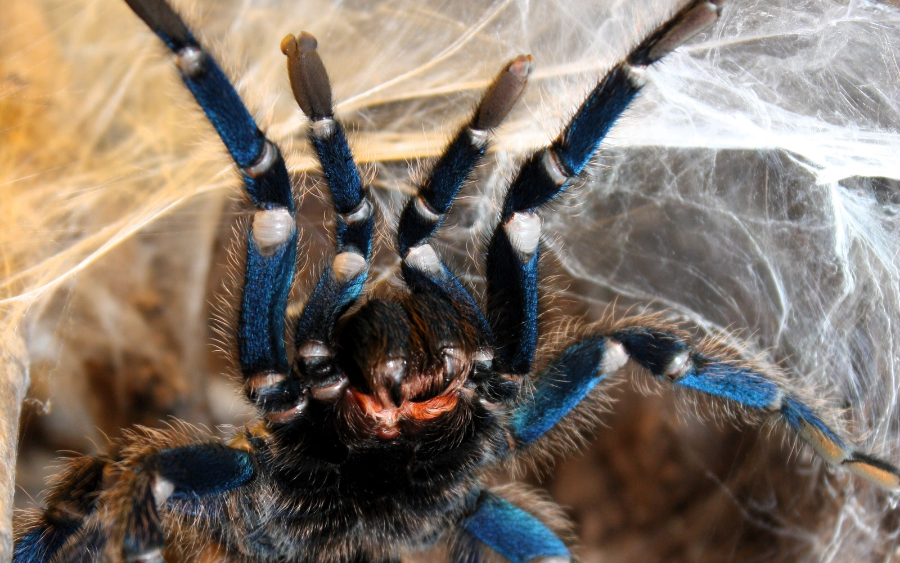
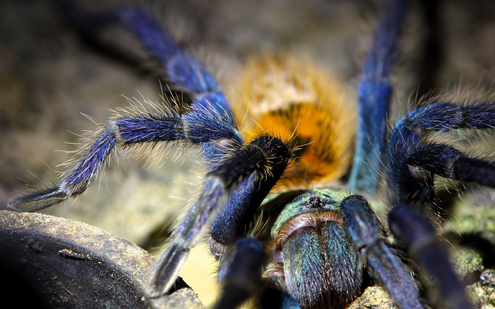
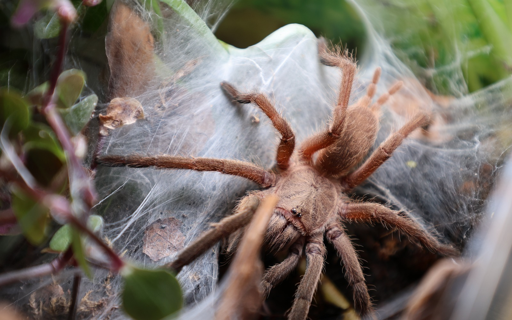
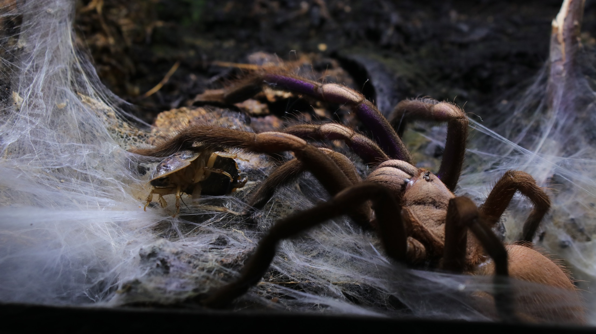
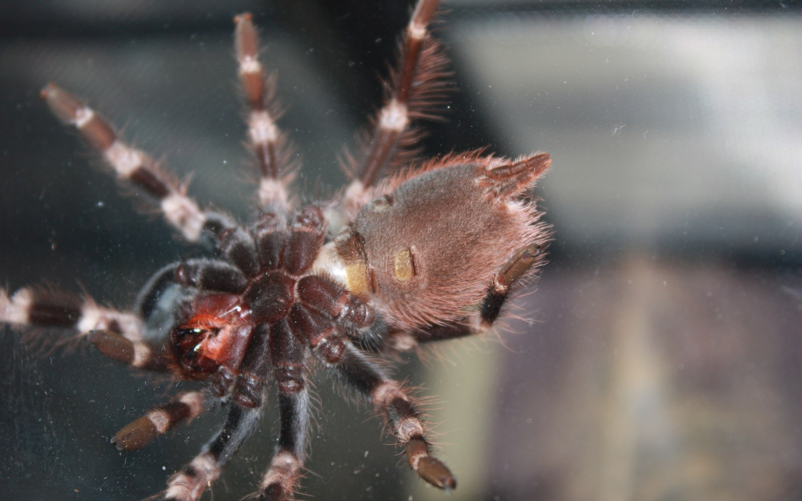
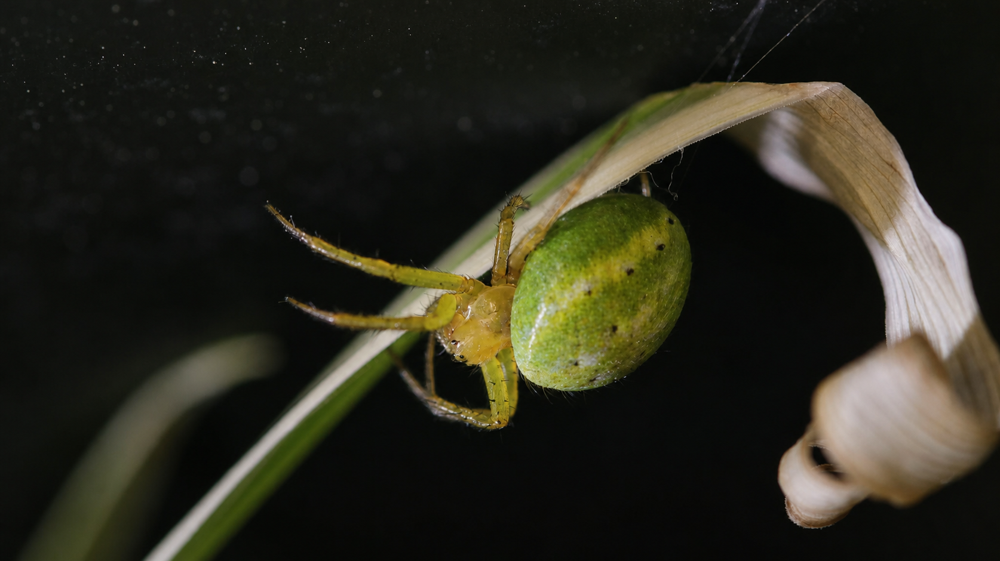

Spider anatomy
Built to sense every tremor.
Explore the structures behind eight-legged movement, silk, venom, breathing, and a spider’s unusually tactile view of the world.
- 2 main body regions
- 8 walking legs
- 0 antennae

Acanthoscurria geniculataReal animal · current collection
Interactive body map
Meet the spider.
Select a visible structure. The selected part stays bright while the rest of the schematic recedes. The map is intentionally simplified; the photographs below return each structure to a real animal.
Dorsal overview · not to scale
The complete plan
One animal, two body regions
A spider’s prosoma carries the eyes, mouthparts, pedipalps, and eight walking legs. A narrow pedicel joins it to the softer abdomen.
See the two body regions
From diagram to animal
Two regions, joined by a narrow waist.
The prosoma, also called the cephalothorax, is the firm front region. Its dorsal carapace covers muscle attachments and nervous tissue; the eyes, chelicerae, pedipalps, and all eight legs connect here.
The opisthosoma, commonly called the abdomen, has a more flexible outer covering. It houses much of the digestive, circulatory, reproductive, respiratory, and silk-producing anatomy.
The connecting pedicel is easy to miss. Its mobility helps the spider position the abdomen while laying silk.
The front end
Eyes, chelicerae, and pedipalps.
Three neighbouring structures do very different jobs: detecting light and motion, puncturing and holding prey, and sensing or manipulating what is close to the mouth.

Simple eyes
Eight eyes are common, but number, size, and arrangement vary. Some hunting spiders rely strongly on vision; many spiders gather more of their immediate information through vibration and touch.

Chelicerae and fangs
Chelicerae are the first pair of appendages. Each carries a hinged fang with a small opening near its tip. They puncture and hold prey while the spider takes in liquid food.

Pedipalps
Pedipalps are not an extra pair of legs. These shorter appendages assist with sensing and food handling. In mature males, their tips carry specialised organs used to transfer sperm.
Eight walking legs
Seven segments, working as one.
Select any segment on the model or in the key. Its bent pose preserves the way a leg reads in space; the shading explains volume rather than depicting a particular species.
Interactive external model · not to scale
Body → foot
A linked, bent limb
Seven main segments connect the body to the foot. Select one to hold it in the light while the others recede.
Muscle and pressure
Flexor muscles bend several leg joints. Changes in haemolymph pressure contribute to extension, but large spiders also use muscular mechanisms; “purely hydraulic legs” is too simple a description.
Claws, hairs, and grip
The tarsus carries claws and, in many spiders, dense adhesive hairs. The exact arrangement varies with lineage and lifestyle.
Volume, not a specimen cast
Light and shadow make the sequence easier to follow in three dimensions. Segment proportions and joint angles vary with species, posture, and camera angle.
How spiders sense
The world arrives as movement.
Spiders carry several kinds of mechanosensory structures. Tactile setae respond to contact; long trichobothria are especially sensitive to air movement; slit sensilla in the cuticle respond to strain.
The visible hairs in a photograph may include sensory and non-sensory setae. Their function cannot be assigned safely from appearance alone.

Spinnerets and silk
A material system at the rear.
Silk begins as protein material in abdominal glands. It reaches the outside through tiny spigots on movable spinnerets, where separate strands can be combined and placed.


Conceptual spinneret plate
Spiders use different silks for different tasks. Depending on the species and life stage, these can include safety lines, retreats, prey-capture structures, egg sacs, wrapping, and sperm webs.

Respiration
Book lungs, tracheae, or both.
Book lungs contain thin, stacked lamellae across which gases are exchanged with the haemolymph. Their narrow external openings lead into chambers inside the abdomen; the lamellae themselves are not visible in an ordinary ventral photograph.
Mygalomorphs generally have two pairs of book lungs. Most araneomorphs retain one anterior pair and have tracheae in place of the posterior pair, although respiratory arrangements vary across spiders.
Conceptual cross-section · flow simplified
1Air enters the chamber2It reaches spaces between stacked lamellae3Oxygen and carbon dioxide diffuse across thin surfaces
Inside a spider
A system map you can place.
Select a system to isolate its broad location. Region labels and a marked pedicel show whether it sits in the prosoma, abdomen, or passes through both.
Conceptual dorsal cutaway · approximate

Growth and molting
To grow, a spider leaves its skeleton behind.
The exoskeleton cannot expand continuously. A new cuticle forms beneath the old one, the old cuticle opens, and the spider gradually withdraws. It then expands before the new covering hardens.
- 01Preparation
A new cuticle develops beneath the old exoskeleton.
- 02Separation
The old cuticle splits and the spider pulls its appendages free.
- 03Expansion
The soft new body is expanded before hardening.
- 04Recovery
Movement and feeding remain limited while the new cuticle and fangs harden.
Many tarantulas molt on their backs. The posture alone is not proof of death; unnecessary disturbance can injure a vulnerable animal.
Two major lineages
A tarantula is a spider—not the template for every spider.
Most repository photographs show mygalomorphs, especially tarantulas. The shared body plan is genuinely spider anatomy, but some highly visible details differ in Araneomorphae.

Mygalomorphae
Tarantulas and relatives
- Chelicerae work roughly parallel, with fangs striking downward.
- Two pairs of book lungs are the usual condition.
- Shared fundamentals still include two body regions, eight legs, pedipalps, chelicerae, and spinnerets.

Araneomorphae
Most described spiders
- Chelicerae oppose one another with an inward, pincer-like action.
- Most have one pair of book lungs plus tracheae.
- Body proportions, eye patterns, spinnerets, claws, and web use are extremely diverse.

Sexual anatomy
The clearest differences appear at maturity.
This is an area where broad rules can mislead. External structures vary among lineages, and sexing a living spider confidently may require species-specific expertise or examination of a shed exoskeleton.
Mature males
The tips of the pedipalps develop specialised palpal organs used to transfer sperm. Mature males of some mygalomorph groups also develop tibial mating structures, but these are not universal.
Females
The genital opening lies on the ventral abdomen. Most female araneomorphs have an external epigyne; internal sperm-storage structures are called spermathecae. Mygalomorph anatomy differs.
Do not sex by size alone
Body proportions, leg length, colour, and lifespan may differ after maturity, but the pattern is species-specific. Photographs that do not show diagnostic structures should not be treated as proof.
Photography gap
Why this section stays schematic for now.
The repository does not yet contain a clean, diagnostic macro of mature male palpal organs, a species with clearly visible tibial mating structures, or a well-presented female exuvium showing spermathecae. Those are now the highest-value anatomy photographs to capture.
Spider anatomy FAQ
Quick answers, careful wording.
Concise answers to the questions people most often ask before going deeper.
What are the two main body parts of a spider?
The prosoma (cephalothorax) and opisthosoma (abdomen), joined by a narrow pedicel.
How many legs does a spider have?
Adult spiders have eight walking legs. Pedipalps are a separate appendage pair and are not counted as legs.
Do all spiders have eight eyes?
No. Eight are common, but eye number and arrangement vary. Some cave-dwelling spiders have strongly reduced or absent eyes.
Where do spiders make silk?
Silk proteins are made in glands inside the abdomen and leave through spigots on movable spinnerets at the rear.
How do spiders breathe?
With book lungs, tracheae, or both. The arrangement differs among spider lineages.
Are tarantulas “true spiders”?
Tarantulas are unequivocally spiders. “True spider” is an informal label sometimes used for Araneomorphae, but it should not imply that mygalomorphs are less genuinely spiders.
Sources and scope
Built from museum guidance and primary research.
Photographs document the animals and visible structures shown; diagrams are intentionally schematic. They explain relationships without pretending to be species-level diagnostic plates.
- Australian Museum — external and internal spider structure
- Virginia Tech — spider anatomy guide
- Journal of Experimental Biology — mechanics of leg extension in large spiders
- Integrative and Comparative Biology — evolution of book lungs and tracheae
- Garrison et al. — spider phylogeny and major lineages